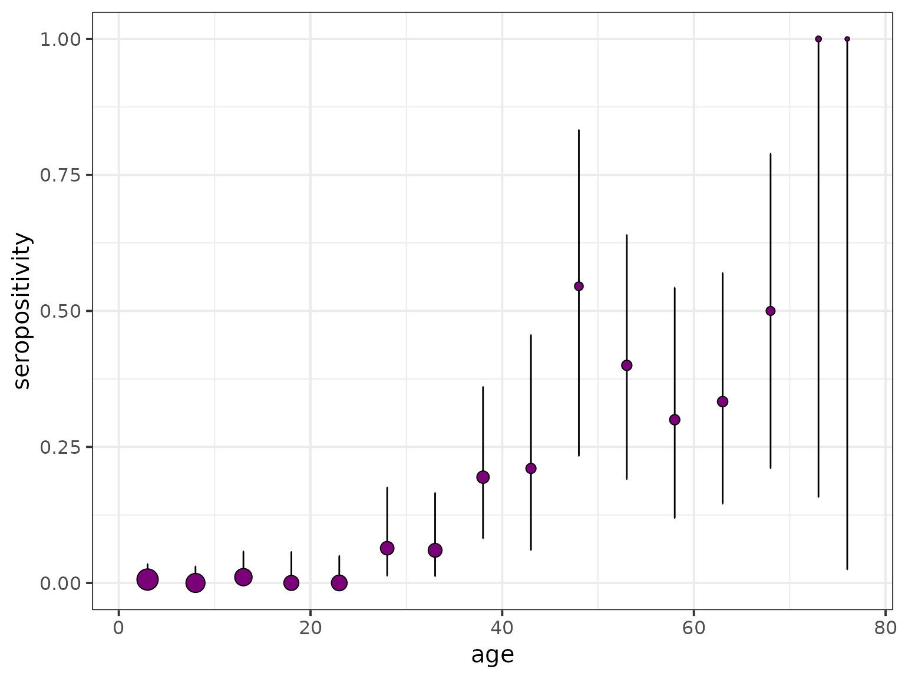

Generate seropositivity plot from a raw serological survey dataset
Source:R/visualisation.R
plot_seroprev.RdGenerate seropositivity plot from a raw serological survey dataset
Arguments
- serodata
A data frame containing the data from a serological survey. This data frame must contain the following columns:
surveysurvey Label of the current survey
totalNumber of samples for each age group
countsNumber of positive samples for each age group
age_minage_min
age_maxage_max
tsurYear in which the survey took place
countryThe country where the survey took place
testThe type of test taken
antibodyantibody
Alternatively to
age_minandage_max, the dataset could already include the age group markerage_mean_f, representing the middle point betweenage_minandage_max. Ifafe_mean_fis missing, it will be generated by the function.- size_text
Text size use in the theme of the graph returned by the function.
- bin_data
If
TRUE,serodatais binned by means ofprepare_bin_data. Otherwise, age groups are kept as originally input.- bin_step
Integer specifying the age groups bin size to be used when
bin_datais set toTRUE.
Value
A ggplot object containing the seropositivity-vs-age graph of the raw data of a given seroprevalence survey with its corresponding binomial confidence interval.
Examples
data(chagas2012)
serodata <- prepare_serodata(chagas2012)
plot_seroprev(serodata, size_text = 15)
#> Warning: (age_min - age_max) is not an integer multiple of step.
#> The last age interval will be truncated to (75,77]
